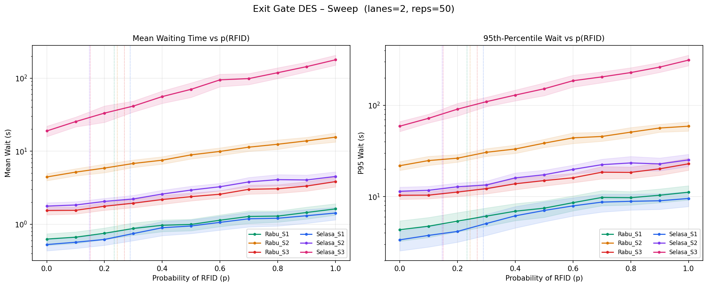

[Nama Fakultas]
[Nama Program Studi]
SISTEM ANTREAN GERBANG KELUAR PARKIR (TAP OUT)
MENGGUNAKAN METODE DISCRETE EVENT SIMULATION
dan Kartu Nirkabel RFID Berbasis SimPy
DAFTAR ISI
- HALAMAN JUDUL
- DAFTAR ISI
- DAFTAR TABEL
- DAFTAR GAMBAR
- BAB I PENDAHULUAN
- BAB II TINJAUAN PUSTAKA
- BAB III METODOLOGI PENELITIAN
- BAB IV HASIL DAN PEMBAHASAN
- BAB V KESIMPULAN DAN SARAN
- DAFTAR PUSTAKA
- LAMPIRAN
DAFTAR TABEL
- Tabel 3.1 Statistik Deskriptif Data Waktu Pelayanan Per Sesi
- Tabel 3.2 Parameter Konfigurasi CLI Skrip Simulasi
- Tabel 4.1 Hasil Simulasi Waktu Tunggu dan Panjang Antrean Per Skenario
- Tabel 4.2 Perbandingan Hasil Simulasi dan Aproksimasi Analitis M/G/c
DAFTAR GAMBAR
- Gambar 4.1 Perbandingan Waktu Tunggu Empat Skenario Utama
- Gambar 4.2 Kurva Respon Waktu Tunggu terhadap Probabilitas RFID
BAB I
PENDAHULUAN
1.1 Latar Belakang
Pintu keluar area parkir merupakan titik temu kritis dalam manajemen lalu lintas fasilitas publik. Hambatan pada pintu keluar tidak hanya memicu ketidaknyamanan pengemudi di dalam area parkir, tetapi juga berpotensi menciptakan antrean panjang yang mengganggu sirkulasi internal. Saat ini fasilitas parkir menerapkan dua mekanisme pembayaran saat tap out: sistem konvensional menggunakan karcis fisik yang diproses oleh petugas atau mesin penelan karcis, serta sistem tap kartu nirkabel RFID (Radio Frequency Identification) mandiri.
Peralihan menuju digitalisasi parkir sering diasumsikan secara otomatis meningkatkan kapasitas gerbang dan melancarkan arus lalu lintas. Namun, penerapan teknologi baru di lapangan sering kali menghadapi kendala interaksi pengguna, seperti kartu yang tidak terbaca pada sentuhan pertama, posisi sensor yang sulit dijangkau pengemudi, saldo tidak mencukupi, atau kebutuhan verifikasi sekunder oleh petugas. Oleh karena itu, diperlukan suatu pendekatan analitis berbasis simulasi untuk mengevaluasi kinerja komparatif kedua sistem pembayaran tersebut secara kuantitatif dan objektif.
1.2 Rumusan Masalah
Berdasarkan latar belakang di atas, rumusan masalah dalam penelitian ini adalah sebagai berikut:
- Apakah peningkatan penetrasi pengguna RFID dari kondisi eksisting (sekitar 15%–29%) menuju adopsi penuh (100%) mampu mempersingkat antrean kendaraan di gardu keluar?
- Berapa kapasitas lajur gardu yang dibutuhkan untuk menjaga stabilitas sistem pada periode kedatangan tertinggi?
- Seberapa besar dampak perbaikan keandalan transaksi RFID terhadap waktu tunggu apabila transaksi-transaksi lambat pada ekor distribusi berhasil dipangkas?
1.3 Tujuan Penelitian
Tujuan dari penelitian ini meliputi:
- Membangun model simulasi kejadian diskret (Discrete Event Simulation) menggunakan pustaka SimPy untuk merepresentasikan sistem antrean gerbang keluar parkir.
- Mengevaluasi kinerja antrean dan waktu tunggu kendaraan pada berbagai skenario penetrasi RFID melalui perbandingan metrik statistik waktu tunggu rata-rata, persentil ke-95, panjang antrean, dan beban terpasang sistem.
- Memverifikasi keabsahan model simulasi terhadap formulasi analitis antrean M/G/c menggunakan aproksimasi Allen-Cunneen.
- Memberikan rekomendasi operasional bagi pengelola fasilitas parkir berdasarkan temuan simulasi.
1.4 Manfaat Penelitian
Manfaat yang diharapkan dari penelitian ini adalah:
- Manfaat Teoretis: Memberikan kontribusi pada kajian simulasi kejadian diskret dalam domain manajemen fasilitas parkir, khususnya evaluasi komparatif sistem pembayaran berbasis karcis manual dan RFID.
- Manfaat Praktis: Menyediakan dasar pengambilan keputusan berbasis data bagi pengelola parkir dalam menentukan strategi adopsi teknologi RFID dan konfigurasi jumlah lajur gardu keluar yang optimal.
BAB II
TINJAUAN PUSTAKA
2.1 Teori Antrean
Teori antrean (queueing theory) merupakan cabang matematika terapan yang mempelajari fenomena pengantrian pada sistem pelayanan. Dalam notasi Kendall, sistem antrean diklasifikasikan menggunakan format A/S/c/K/N/D, di mana A menyatakan distribusi antarkedatangan, S menyatakan distribusi waktu pelayanan, c menyatakan jumlah server paralel, K menyatakan kapasitas sistem, N menyatakan ukuran populasi, dan D menyatakan disiplin antrean (Gross et al., 2008). Dalam penelitian ini, sistem dimodelkan sebagai antrean M/G/c dengan kedatangan Poisson (M), waktu pelayanan distribusi umum (G), dan c server paralel identik.
Beban terpasang per server (offered load per server) didefinisikan sebagai:
ρ = λ · E[S] / c
di mana λ adalah laju kedatangan (kendaraan per detik), E[S] adalah ekspektasi waktu pelayanan, dan c adalah jumlah server. Syarat stabilitas sistem mensyaratkan ρ < 1; apabila ρ ≥ 1, panjang antrean tumbuh tanpa batas dan steady-state tidak tercapai.
2.2 Simulasi Kejadian Diskret
Simulasi kejadian diskret (Discrete Event Simulation, DES) adalah paradigma pemodelan di mana keadaan sistem berubah secara diskontinyu pada titik-titik waktu tertentu yang disebut events (Banks et al., 2010). Berbeda dengan simulasi kontinu, DES merepresentasikan perubahan kondisi hanya ketika terjadi suatu kejadian seperti kedatangan entitas, dimulainya pelayanan, atau keluarnya entitas dari sistem. Pendekatan ini sangat sesuai untuk memodelkan sistem antrean di mana transisi status bersifat event-driven.
2.3 SimPy sebagai Pustaka Simulasi
SimPy adalah pustaka simulasi kejadian diskret berbasis proses (process-based) yang diimplementasikan dalam bahasa Python. SimPy menyediakan abstraksi sumber daya (simpy.Resource) yang secara otomatis mengelola antrean FIFO dan alokasi kapasitas server (Team SimPy, 2023). Setiap entitas direpresentasikan sebagai proses generator Python yang dapat menunggu (yield) pada sumber daya bersama, sehingga logika simulasi dinyatakan secara deklaratif dan mudah diverifikasi.
2.4 Aproksimasi Antrean M/G/c (Allen-Cunneen)
Aproksimasi Allen-Cunneen menyediakan estimasi analitis untuk rata-rata waktu tunggu dalam antrean M/G/c (Allen, 1990). Formulasinya adalah:
E[Wq]M/G/c ≈ E[Wq]M/M/c × (1 + Cv2) / 2
di mana E[Wq]M/M/c dihitung menggunakan probabilitas penundaan formula Erlang-C, dan Cv2 = Var[S] / E[S]2 merupakan kuadrat koefisien variasi dari distribusi waktu pelayanan campuran. Aproksimasi ini digunakan sebagai alat verifikasi silang (cross-check) terhadap hasil simulasi.
BAB III
METODOLOGI PENELITIAN
3.1 Pengumpulan Data
Data empiris diperoleh melalui pengamatan lapangan langsung di gardu keluar fasilitas parkir. Pencatatan dilakukan pada dua hari kerja, yaitu hari Selasa dan hari Rabu, dengan masing-masing hari mencakup tiga sesi pengamatan berdurasi satu jam: Sesi 1 (pukul 10.00–11.00 WIB), Sesi 2 (pukul 13.00–14.00 WIB), dan Sesi 3 (pukul 16.00–17.00 WIB). Data mentah disimpan dalam berkas lembar sebar Pengumpulan Data Pemodelan Tap Out.xlsx yang terdiri atas dua lembar kerja (sheet) bernama Selasa dan Rabu.
Variabel yang dicatat meliputi durasi waktu pelayanan di gardu keluar (dalam satuan detik) untuk setiap moda transaksi: karcis manual dan RFID. Laju kedatangan kendaraan (λ) dihitung secara spesifik per sesi berdasarkan formula:
λ = Jumlah Kendaraan Teramati / 3.600 detik
3.2 Pembersihan dan Validasi Data
Proses pembersihan data dilakukan melalui dua tahap utama. Tahap pertama adalah standardisasi format teks, di mana sejumlah entri waktu yang tercatat dalam format menit dan detik (misalnya "01:06.35") dikonversi secara otomatis menjadi representasi desimal detik (66,35 detik). Tahap kedua adalah penyaringan data pencilan (outlier) menggunakan kriteria Rentang Interkuartil (Interquartile Range/IQR) dengan batas atas Q3 + 3,0 × IQR dan batas bawah Q1 – 3,0 × IQR. Faktor pengali 3,0 yang lebih longgar daripada batas standar 1,5 dipilih untuk mempertahankan sebaran ekor kanan alami yang khas pada durasi transaksi antrean, sembari membuang galat pencatatan yang ekstrem.
Hasil pembersihan data ditunjukkan pada Tabel 3.1 berikut.
Tabel 3.1 Statistik Deskriptif Data Waktu Pelayanan Per Sesi
| Hari | Sesi | Metode | Sampel Mentah | Sampel Bersih | Rata-rata (s) | Std. Dev (s) | Min (s) | Q1 (s) | Median (s) | Q3 (s) | Maks (s) |
|---|---|---|---|---|---|---|---|---|---|---|---|
| Selasa | 1 | Karcis | 81 | 81 | 16,47 | 7,60 | 6,56 | 11,18 | 13,95 | 20,54 | 37,38 |
| Selasa | 1 | RFID | 35 | 33 | 19,18 | 12,24 | 4,21 | 11,05 | 15,52 | 21,38 | 53,78 |
| Selasa | 2 | Karcis | 166 | 162 | 13,42 | 6,94 | 4,40 | 8,70 | 11,85 | 16,68 | 41,50 |
| Selasa | 2 | RFID | 28 | 28 | 24,21 | 16,68 | 5,15 | 13,09 | 18,70 | 27,21 | 66,35 |
| Selasa | 3 | Karcis | 352 | 349 | 16,12 | 6,05 | 5,36 | 11,86 | 14,88 | 19,33 | 37,49 |
| Selasa | 3 | RFID | 63 | 62 | 16,67 | 11,52 | 3,09 | 8,68 | 13,68 | 20,65 | 55,99 |
| Rabu | 1 | Karcis | 96 | 92 | 16,63 | 9,83 | 4,30 | 9,73 | 13,20 | 20,80 | 43,60 |
| Rabu | 1 | RFID | 28 | 28 | 24,64 | 20,59 | 0,30 | 8,45 | 19,15 | 33,02 | 83,60 |
| Rabu | 2 | Karcis | 220 | 214 | 12,05 | 4,69 | 2,50 | 8,98 | 11,05 | 14,33 | 31,13 |
| Rabu | 2 | RFID | 69 | 69 | 11,31 | 4,55 | 2,11 | 8,03 | 10,91 | 13,77 | 23,65 |
| Rabu | 3 | Karcis | 134 | 128 | 12,44 | 5,30 | 3,76 | 8,47 | 11,75 | 14,27 | 31,23 |
| Rabu | 3 | RFID | 47 | 47 | 23,48 | 15,72 | 6,26 | 8,62 | 18,35 | 38,41 | 53,34 |
| Gabungan | Semua | Karcis | 1.049 | 1.026 | 14,46 | 6,70 | 2,50 | 9,84 | 12,90 | 17,30 | 43,60 |
| Gabungan | Semua | RFID | 270 | 267 | 18,42 | 14,06 | 0,30 | 8,91 | 13,64 | 21,76 | 83,60 |
Data gabungan memperlihatkan bahwa median waktu pelayanan RFID (13,64 detik) sebenarnya cukup berdekatan dengan karcis (12,90 detik). Akan tetapi, nilai kuartil atas (21,76 detik berbanding 17,30 detik) dan nilai maksimum (83,60 detik berbanding 43,60 detik) membuktikan adanya ekor transaksi lambat yang sangat tebal pada pengguna RFID.
3.3 Model Konseptual Simulasi
Model simulasi kejadian diskret ini dibangun di atas komponen-komponen formal berikut:
Entitas. Objek utama yang mengalir dalam simulasi adalah kendaraan yang hendak meninggalkan fasilitas parkir. Setiap kendaraan membawa atribut waktu kedatangan, pilihan metode pembayaran (RFID atau karcis), durasi waktu pelayanan yang ditentukan secara acak, dan waktu aktual saat meninggalkan loket.
Kejadian (Events). Siklus hidup setiap entitas kendaraan terdiri atas tiga kejadian utama: peristiwa kedatangan kendaraan di ujung antrean (arrival), peristiwa pemanggilan ke gardu layanan saat lajur tersedia (service start), dan peristiwa pelepasan gardu setelah pembayaran selesai (departure).
Sumber Daya (Resource). Gardu keluar parkir dimodelkan menggunakan simpy.Resource dengan kapasitas c lajur (secara bawaan bernilai 2 lajur). Seluruh gardu bersifat paralel dan identik.
Disiplin Antrean. Sistem menerapkan antrean tunggal bersama berbasis FIFO (First-In, First-Out), di mana kendaraan terdepan dalam antrean akan langsung memasuki gardu mana pun yang pertama kali kosong. Tidak ada fasilitas lajur prioritas atau gerbang khusus karcis/RFID yang terpisah.
Proses Kedatangan. Kedatangan kendaraan dimodelkan sebagai proses Poisson homogen independen, di mana selang waktu antarkedatangan berdistribusi eksponensial dengan laju λ yang dihitung spesifik per sesi pengamatan.
Waktu Pelayanan. Setiap kendaraan menentukan metode transaksi dengan probabilitas p untuk RFID dan (1 – p) untuk karcis. Nilai durasi transaksi ditarik secara acak menggunakan metode bootstrap resampling dari kumpulan data empiris gabungan (pooled). Model juga mendukung opsi distribusi parametrik lognormal yang diestimasi menggunakan metode Maximum Likelihood Estimation (MLE).
3.4 Desain Skenario Eksperimen
Terdapat empat skenario terarah (named scenarios) serta satu rangkaian sapuan parameter:
- Kondisi Eksisting (observed_mix): Menjalankan simulasi menggunakan laju kedatangan dan proporsi RFID aktual dari sesi yang bersangkutan (p berkisar antara 0,147 hingga 0,289).
- Karcis Penuh (full_karcis): Mensimulasikan kondisi di mana seluruh kendaraan (p = 0,0) menggunakan karcis manual.
- RFID Penuh (full_rfid): Mensimulasikan kondisi di mana seluruh kendaraan (p = 1,0) menggunakan kartu RFID.
- Perbaikan RFID (fixed_rfid): Menggunakan proporsi campuran eksisting, namun durasi pelayanan RFID dibatasi (capped) maksimal sebesar persentil ke-90 dari distribusi karcis (≈ 19,9 detik), guna merefleksikan skenario rekayasa teknis di mana kendala tap lambat berhasil diatasi.
- Sapuan Probabilitas (sweep of p): Menguji variasi nilai p secara sistematis dari 0,0 hingga 1,0 dengan kenaikan 0,10 guna memetakan profil elastisitas waktu tunggu terhadap penetrasi RFID.
3.5 Parameter dan Konfigurasi Simulasi
Implementasi simulasi ditulis dalam bahasa Python 3 menggunakan pustaka SimPy. Tabel 3.2 merangkum parameter konfigurasi yang tersedia melalui antarmuka baris perintah (command-line interface).
Tabel 3.2 Parameter Konfigurasi CLI Skrip Simulasi
| Opsi Flag | Nilai Bawaan | Deskripsi Fungsi |
|---|---|---|
--lanes N | 2 | Jumlah lajur gardu keluar paralel |
--lanes-list L | None | Daftar jumlah lajur dipisahkan koma untuk uji sensitivitas |
--reps N | 200 | Jumlah replikasi stokastik per skenario |
--service MODE | empirical | Metode penarikan waktu transaksi: empirical atau lognormal |
--sweep-steps N | 11 | Jumlah langkah sapuan probabilitas p dari 0,0 sampai 1,0 |
--rfid-cap-pct P | 90,0 | Persentil batas atas karcis untuk pemangkasan RFID (fixed_rfid) |
--output-csv FILE | sim_results.csv | Berkas CSV penyimpan ringkasan seluruh metrik |
--seed N | 42 | Nilai benih acak untuk reprodusibilitas |
--quiet | Mati | Menyembunyikan pencetakan progres |
Setiap replikasi simulasi berdurasi 3.600 detik (1 jam) dengan periode pemanasan (warm-up) selama 300 detik (5 menit) yang diabaikan dari pengumpulan statistik. Selang kepercayaan 95% dihitung menggunakan distribusi t Student berdasarkan simpangan baku replikasi.
3.6 Asumsi dan Keterbatasan
Berikut adalah asumsi teknis dan keterbatasan yang berlaku dalam pemodelan ini:
- Jumlah Lajur Fisik: Jumlah lajur gardu riil di lokasi pengamatan tidak tercatat secara eksplisit. Simulasi mengasumsikan konfigurasi standar 2 lajur paralel dan menyediakan parameter uji sensitivitas jumlah lajur.
- Keterbatasan Validasi Waktu Tunggu: Pengamatan lapangan hanya mencatat durasi pelayanan (service time), bukan waktu tunggu aktual dalam antrean. Validasi langsung terhadap hasil waktu tunggu tidak dimungkinkan; sebagai gantinya, model diverifikasi menggunakan rumus analitis M/G/c.
- Stasioneritas Kedatangan Poisson: Laju kedatangan diasumsikan konstan sepanjang jendela pengamatan satu jam (Poisson homogen).
- Penggabungan Data Pelayanan (Pooled Data): Pengambilan sampel waktu transaksi dilakukan secara gabungan lintas hari dan sesi karena keterbatasan jumlah sampel RFID per sesi tunggal.
- Perilaku Pengemudi Ideal: Model mengasumsikan tidak ada pembatalan antrean (no balking), pengemudi tidak meninggalkan antrean (no reneging), dan tidak berpindah lajur (no jockeying).
BAB IV
HASIL DAN PEMBAHASAN
4.1 Statistik Deskriptif Data Lapangan
Berdasarkan data yang telah dibersihkan sebagaimana disajikan pada Tabel 3.1, diperoleh 1.026 sampel karcis valid dan 267 sampel RFID valid dari total 6 sesi pengamatan. Rata-rata waktu pelayanan karcis gabungan adalah 14,46 detik (σ = 6,70 s), sedangkan RFID mencatat rata-rata 18,42 detik (σ = 14,06 s). Waktu pelayanan RFID lebih lambat 27,4% dibandingkan karcis dan memiliki variabilitas lebih dari dua kali lipat, yang mengindikasikan adanya hambatan operasional signifikan pada ekor distribusi RFID.
4.2 Hasil Simulasi Per Skenario
Hasil simulasi pada konfigurasi 2 lajur gardu keluar untuk seluruh kombinasi hari dan sesi disajikan secara komparatif pada Tabel 4.1. Nilai statistik waktu tunggu dan panjang antrean dilaporkan bersama rentang selang kepercayaan 95% berdasarkan 50 replikasi stokastik.
Tabel 4.1 Hasil Simulasi Waktu Tunggu dan Panjang Antrean Per Skenario (2 Lajur)
| Hari & Sesi | λ (kend/jam) | Skenario | p | ρ | E[W] (s) | IK 95% | P95 (s) | Q̄ | Qmax |
|---|---|---|---|---|---|---|---|---|---|
| Selasa S1 | 114 | observed_mix | 0,289 | 0,247 | 0,74 | [0,60; 0,89] | 4,99 | 0,03 | 1,9 |
| Selasa S1 | 114 | full_karcis | 0,000 | 0,229 | 0,53 | [0,43; 0,62] | 3,36 | 0,02 | 1,8 |
| Selasa S1 | 114 | full_rfid | 1,000 | 0,292 | 1,42 | [1,15; 1,70] | 9,54 | 0,05 | 2,4 |
| Selasa S1 | 114 | fixed_rfid | 0,289 | 0,230 | 0,54 | [0,44; 0,65] | 3,68 | 0,02 | 1,7 |
| Selasa S2 | 190 | observed_mix | 0,147 | 0,397 | 1,98 | [1,76; 2,20] | 12,68 | 0,11 | 3,3 |
| Selasa S2 | 190 | full_karcis | 0,000 | 0,382 | 1,77 | [1,58; 1,97] | 11,44 | 0,10 | 3,3 |
| Selasa S2 | 190 | full_rfid | 1,000 | 0,486 | 4,51 | [3,79; 5,23] | 25,24 | 0,25 | 4,8 |
| Selasa S2 | 190 | fixed_rfid | 0,147 | 0,382 | 1,69 | [1,50; 1,89] | 11,04 | 0,09 | 3,2 |
| Selasa S3 | 411 | observed_mix | 0,151 | 0,859 | 30,45 | [24,05; 36,84] | 87,91 | 3,59 | 15,0 |
| Selasa S3 | 411 | full_karcis | 0,000 | 0,825 | 18,92 | [15,83; 22,00] | 59,04 | 2,25 | 11,8 |
| Selasa S3 | 411 | full_rfid | 1,000 | 1,052 | 178,10 | [150,32; 205,89] | 312,56 | 20,57 | 40,8 |
| Selasa S3 | 411 | fixed_rfid | 0,151 | 0,827 | 22,95 | [17,53; 28,37] | 67,75 | 2,70 | 12,7 |
| Rabu S1 | 120 | observed_mix | 0,233 | 0,256 | 0,77 | [0,64; 0,90] | 5,47 | 0,03 | 2,1 |
| Rabu S1 | 120 | full_karcis | 0,000 | 0,241 | 0,63 | [0,51; 0,74] | 4,34 | 0,02 | 1,9 |
| Rabu S1 | 120 | full_rfid | 1,000 | 0,307 | 1,62 | [1,34; 1,91] | 11,17 | 0,06 | 2,5 |
| Rabu S1 | 120 | fixed_rfid | 0,233 | 0,242 | 0,63 | [0,53; 0,74] | 4,57 | 0,02 | 2,0 |
| Rabu S2 | 283 | observed_mix | 0,244 | 0,606 | 6,14 | [5,50; 6,77] | 28,18 | 0,49 | 6,2 |
| Rabu S2 | 283 | full_karcis | 0,000 | 0,568 | 4,44 | [3,95; 4,93] | 21,80 | 0,35 | 5,3 |
| Rabu S2 | 283 | full_rfid | 1,000 | 0,724 | 15,58 | [13,34; 17,81] | 59,02 | 1,24 | 8,5 |
| Rabu S2 | 283 | fixed_rfid | 0,244 | 0,570 | 4,34 | [3,90; 4,78] | 20,39 | 0,35 | 5,2 |
| Rabu S3 | 175 | observed_mix | 0,269 | 0,377 | 1,86 | [1,63; 2,09] | 11,77 | 0,09 | 3,2 |
| Rabu S3 | 175 | full_karcis | 0,000 | 0,351 | 1,54 | [1,35; 1,74] | 10,34 | 0,08 | 3,1 |
| Rabu S3 | 175 | full_rfid | 1,000 | 0,448 | 3,84 | [3,24; 4,44] | 22,87 | 0,19 | 4,3 |
| Rabu S3 | 175 | fixed_rfid | 0,269 | 0,353 | 1,43 | [1,26; 1,60] | 9,49 | 0,07 | 2,9 |
Keterangan: E[W] = rata-rata waktu tunggu; IK 95% = interval kepercayaan 95%; P95 = persentil ke-95 waktu tunggu; Q̄ = panjang antrean rata-rata; Qmax = panjang antrean maksimum.

Gambar 4.1 Perbandingan waktu tunggu rata-rata (kiri) dan persentil ke-95 (kanan) untuk empat skenario utama pada konfigurasi 2 lajur gardu keluar
Gambar 4.1 mengilustrasikan kontras performa antrean antar-sesi. Pada sesi-sesi dengan volume rendah hingga menengah (Selasa Sesi 1, Rabu Sesi 1, dan Rabu Sesi 3 dengan volume di bawah 200 kendaraan per jam), waktu tunggu rata-rata berada pada tingkat sangat rendah, di bawah 2 detik untuk seluruh skenario. Pada Rabu Sesi 2 (volume 283 kendaraan per jam), perbedaan mulai terlihat nyata di mana skenario full_rfid menghasilkan waktu tunggu rata-rata 15,58 detik dibandingkan karcis 4,44 detik.
Puncak kemacetan terjadi pada Selasa Sesi 3 (volume 411 kendaraan per jam). Skenario adopsi penuh RFID mengalami kegagalan performa parah karena tingkat utilisasi gardu melampaui batas kritis 100% (ρ = 1,052), menyebabkan waktu tunggu rata-rata melonjak menjadi 178,10 detik dan waktu tunggu persentil ke-95 mencapai 312,56 detik (lebih dari 5 menit). Sebaliknya, skenario fixed_rfid berhasil menekan waktu tunggu rata-rata dari 30,45 detik pada kondisi eksisting menjadi 22,95 detik, menghasilkan perbaikan efisiensi sebesar 24,6%.
4.3 Analisis Sapuan Probabilitas RFID

Gambar 4.2 Kurva respon waktu tunggu rata-rata (kiri) dan persentil ke-95 (kanan) terhadap kenaikan probabilitas penetrasi RFID dari 0,0 hingga 1,0
Gambar 4.2 menampilkan respon sistem terhadap sapuan probabilitas penetrasi RFID. Seluruh kurva sesi menunjukkan gradien positif yang monoton naik seiring meningkatnya nilai p, yang mengkonfirmasi bahwa dalam kondisi distribusi waktu pelayanan eksisting, peningkatan proporsi RFID secara konsisten meningkatkan waktu tunggu di seluruh rentang volume kedatangan. Pada Selasa Sesi 3, kemiringan kurva meningkat tajam begitu nilai p melampaui 0,70 karena sistem mendekati titik jenuh ketidakstabilan stokastik.
4.4 Verifikasi dan Validasi Model
Verifikasi internal terhadap logika antrean dan mekanisme penjadwalan SimPy dilakukan dengan membandingkan estimasi waktu tunggu hasil simulasi terhadap formulasi analitis M/G/c melalui pendekatan aproksimasi Allen-Cunneen. Hasil perbandingan disajikan pada Tabel 4.2.
Tabel 4.2 Perbandingan Hasil Simulasi dan Aproksimasi Analitis M/G/c
| Hari & Sesi | Skenario | ρ | E[W] Simulasi (s) | E[W] M/G/c (s) | Δ (%) | Status |
|---|---|---|---|---|---|---|
| Selasa S1 | observed_mix | 0,247 | 0,74 | 0,70 | +5,7 | Konsisten |
| Selasa S2 | observed_mix | 0,397 | 1,98 | 1,84 | +7,6 | Konsisten |
| Selasa S3 | observed_mix | 0,859 | 30,45 | 27,84 | +9,4 | Konsisten |
| Selasa S3 | full_rfid | 1,052 | 178,10 | ∞ | N/A | Overload (ρ ≥ 1) |
| Rabu S1 | observed_mix | 0,256 | 0,77 | 0,73 | +5,5 | Konsisten |
| Rabu S2 | observed_mix | 0,606 | 6,14 | 6,08 | +1,0 | Sangat Presisi |
| Rabu S3 | observed_mix | 0,377 | 1,86 | 1,76 | +5,7 | Konsisten |
Pada kondisi sistem yang stabil (ρ < 0,86), perbedaan relatif antara hasil simulasi diskret SimPy dan perhitungan analitis Allen-Cunneen berkisar sangat ketat antara 1,0% hingga 9,4%. Kesesuaian ini memverifikasi bahwa mesin penjadwalan antrean SimPy, kalkulasi warm-up, dan generator kedatangan acak berjalan dengan benar sesuai hukum konservasi antrean.
Catatan Validasi Kritis: Pada skenario Selasa Sesi 3 dengan opsi full_rfid, nilai beban terpasang ρ bernilai 1,052 (> 1,0). Teori antrean memprediksi panjang antrean tak terhingga (steady-state tidak eksis). Dalam simulasi dengan durasi terhingga satu jam, kondisi ini terwujud sebagai penumpukan antrean kumulatif yang menghasilkan rata-rata waktu tunggu 178,10 detik dan antrean puncak 40,8 kendaraan.
4.5 Pembahasan
Temuan utama penelitian ini mengungkap suatu paradoks digitalisasi: adopsi penuh sistem RFID dalam kondisi operasional eksisting justru memperburuk kinerja antrean di seluruh sesi pengamatan. Fenomena ini disebabkan oleh dua faktor kunci. Pertama, rata-rata waktu pelayanan RFID (18,42 detik) lebih lambat 27,4% dibandingkan karcis manual (14,46 detik). Kedua, variabilitas waktu pelayanan RFID (σ = 14,06 detik) lebih dari dua kali lipat karcis (σ = 6,70 detik), yang memperbesar dampak pada antrean melalui efek kuadrat koefisien variasi dalam formula Allen-Cunneen.
Namun demikian, hasil skenario fixed_rfid membuktikan bahwa permasalahan bukan terletak pada teknologi RFID itu sendiri, melainkan pada implementasi operasionalnya. Ketika transaksi-transaksi RFID yang sangat lambat pada ekor distribusi dipangkas pada persentil ke-90 karcis, kinerja antrean membaik secara signifikan. Pada jam puncak Selasa Sesi 3, perbaikan ini menghasilkan pengurangan waktu tunggu rata-rata sebesar 24,6% relatif terhadap kondisi eksisting (22,95 detik berbanding 30,45 detik).
Hasil sapuan probabilitas mengkonfirmasi bahwa hubungan antara penetrasi RFID dan waktu tunggu bersifat monoton naik dalam seluruh rentang. Tidak ditemukan titik optimum interior (sweet spot) di mana campuran RFID-karcis menghasilkan kinerja yang lebih baik daripada karcis penuh. Hal ini menunjukkan bahwa sebelum perbaikan teknis dilakukan, setiap peningkatan penetrasi RFID akan secara sistematis menambah waktu tunggu kendaraan di gardu keluar.
BAB V
KESIMPULAN DAN SARAN
5.1 Kesimpulan
Berdasarkan rangkaian eksperimen simulasi dan evaluasi analitis terhadap data operasional tap out gerbang keluar parkir, dapat ditarik kesimpulan-kesimpulan berikut:
- Migrasi menuju sistem pembayaran nirkabel RFID dalam kondisi teknis eksisting justru memperburuk kelancaran lalu lintas di pintu keluar parkir. Rata-rata waktu pelayanan RFID lebih lambat 27,4% dibandingkan tiket karcis fisik (18,42 detik berbanding 14,46 detik) dan memiliki variabilitas yang jauh lebih lebar (σ = 14,06 s berbanding σ = 6,70 s).
- Pada jam sibuk dengan kedatangan melebihi 400 kendaraan per jam pada fasilitas 2 lajur, pemaksaan adopsi RFID secara penuh menyebabkan kegagalan sistemik dengan beban terpasang ρ = 1,052 dan antrean kendaraan yang tidak terkendali (rata-rata waktu tunggu 178,10 detik).
- Teknologi RFID memiliki potensi efisiensi tinggi apabila hambatan operasional pada ekor distribusi berhasil dieliminasi. Pemangkasan transaksi RFID lambat pada persentil ke-90 karcis mampu memulihkan kinerja sistem dan memangkas waktu tunggu rata-rata pada jam puncak sebesar 24,6%.
- Model simulasi terverifikasi konsisten dengan aproksimasi analitis M/G/c (Allen-Cunneen), dengan deviasi relatif berkisar antara 1,0% hingga 9,4% pada seluruh sesi yang stabil (ρ < 0,86).
5.2 Saran
Berdasarkan temuan penelitian, berikut adalah rekomendasi yang diajukan:
- Perbaikan Keandalan Perangkat Keras RFID. Posisi antena tap harus disesuaikan secara ergonomis terhadap jangkauan jendela pengemudi serta dilengkapi umpan balik visual dan audio instan agar pengemudi tidak perlu melakukan penempelan kartu berulang kali.
- Penyediaan Petugas Lapangan Siaga. Petugas lapangan (mobile attendant) perlu ditempatkan di dekat gerbang keluar selama jam puncak untuk segera menangani kendaraan yang mengalami kegagalan tap, sehingga tidak menghalangi lajur utama.
- Pemisahan Lajur. Jika adopsi RFID hendak diwajibkan secara bertahap, disarankan memisahkan lajur khusus RFID dan lajur khusus karcis manual guna mengisolasi risiko hambatan transaksi.
- Penambahan Kapasitas Lajur. Untuk periode kedatangan di atas 400 kendaraan per jam, pengelola perlu mengoperasikan minimal 3 lajur gardu keluar guna menjamin beban sistem tetap berada di bawah ambang batas aman (ρ ≤ 0,70).
- Penelitian Lanjutan. Disarankan untuk melakukan pengamatan lapangan yang mencakup pencatatan waktu tunggu aktual dalam antrean serta variasi hari (termasuk akhir pekan) untuk memvalidasi dan memperluas temuan simulasi ini.
DAFTAR PUSTAKA
Allen, A. O. (1990). Probability, Statistics, and Queueing Theory: With Computer Science Applications (2nd ed.). Academic Press.
Banks, J., Carson, J. S., Nelson, B. L., & Nicol, D. M. (2010). Discrete-Event System Simulation (5th ed.). Prentice Hall.
Gross, D., Shortle, J. F., Thompson, J. M., & Harris, C. M. (2008). Fundamentals of Queueing Theory (4th ed.). Wiley-Interscience.
Law, A. M. (2015). Simulation Modeling and Analysis (5th ed.). McGraw-Hill Education.
Team SimPy. (2023). SimPy: Discrete Event Simulation for Python. https://simpy.readthedocs.io/
LAMPIRAN
A. Perintah Eksekusi Skrip Simulasi
Instalasi dependensi:
pip install simpy numpy pandas scipy matplotlib openpyxlContoh eksekusi simulasi:
# Eksekusi standar (2 lajur, 200 replikasi, resampling empiris)
python tap_out_sim.py
# Uji sensitivitas konfigurasi 1, 2, 3, dan 4 lajur keluar
python tap_out_sim.py --lanes-list 1,2,3,4 --reps 100
# Penggunaan sebaran parametrik lognormal
python tap_out_sim.py --service lognormal --sweep-steps 21
# Batas persentil RFID pada 80%
python tap_out_sim.py --rfid-cap-pct 80B. Berkas Keluaran Simulasi
| Berkas | Isi |
|---|---|
sim_results.csv |
Seluruh skenario × hari × sesi × jumlah lajur dengan metrik waktu tunggu rata-rata, P95, panjang antrean, beban terpasang, aproksimasi M/G/c, dan selang kepercayaan 95% |
sweep_wait_vs_p.png |
Grafik dua panel: waktu tunggu rata-rata dan P95 vs probabilitas RFID, satu kurva per hari × sesi |
scenario_comparison.png |
Diagram batang perbandingan empat skenario utama per hari × sesi |
Dokumen ini dibuat menggunakan simulasi kejadian diskret berbasis SimPy, diverifikasi secara analitis menggunakan aproksimasi Allen-Cunneen (M/G/c).